Maternalismo y educación
Maternalismo y educación
Introducción
El maternalismo está enraizado en la cultura latinoamericana y, en especial, en Chile (Alejandra Ramm and Ramm 2020). Este concepto se refiere a la idea que fusiona a las mujeres con la maternidad, al mismo tiempo que se vincula con una construcción identitaria de la feminidad, especialmente latinoamericana (Alvarez Minte, Ramm, and Gideon 2021). En este sentido, la mujer resulta esencializada por la maternidad, vinculándola a su feminidad y a roles congruentes a la idea de mujer que se encarga de su hogar en las labores domésticas, de cuidado y de trabajos reproductivos. Por otro lado, este concepto otorga a las madres un conjunto distintivo de valores en donde la superioridad moral logra ser la más importante. El discurso maternalista está muy presente en América Latina (Alejandra Ramm and Ramm 2020), pues, en la región, el sistema de parentesco se centra principalmente en la madre, cuya figura es la principal red de apoyo familiar. Su influencia llega a ser tal, que este discurso llega a utilizarse en políticas públicas, utilizando el rol maternal como punto de partida en las gestiones y diseños de éstas mismas (Alvarez Minte, Ramm, and Gideon 2021).
Sin embargo, el maternalismo no está exento de críticas, ya que el feminismo tiene una visión que reprocha este discurso en tanto, se le considera una visión que promueve imágenes tradicionales de la mujer donde se le vinculaba socialmente a lo privado. Por otro lado, se le acusa de perpetuar los roles de género en donde es la mujer quien se lleva toda la carga reproductiva del hogar y de su familia, aumentando así la desigualdad de género.
Las desigualdades sociales de género no sólo afectarían a la mujer, sino que también al hombre, pues la división sexual del trabajo sitúa al hombre como proveedor (Alvarez Minte, Ramm, and Gideon 2021), ignorando su posible rol de padre y cuidador. Este último aspecto se ve reflejado incluso en carreras profesionales que involucran el cuidado, ya sea la docencia parvularia, área que está prácticamente dominada por mujeres o la carrera de enfermería.
La mujer-madre vela por el bienestar de la familia, muchas veces a expensas de su propio bienestar (Alvarez Minte, Ramm, and Gideon 2021), y en este caso, de su propio futuro. En este sentido, las mujeres que avanzan en su educación, llegando a la educación superior e incluso tomando más responsabilidades y cargos profesionales, están teniendo un cambio de mentalidad en torno a las ideas maternalistas, tal como señala Lola G. Luna (2009) en (Lorenzo Pinar and Universidad de Salamanca 2009), en tanto adquieren más conciencia de las desigualdades de género que las posiciona como mujeres-madres-cuidadoras al mismo tiempo que, como sociedad se les exige ser ciudadanas trabajadoras y profesionales.
Durante la pandemia en el año 2020, la crisis de los cuidados se hizo notar, en otras palabras, con el confinamiento y el cierre de establecimientos educacionales, aumentó el trabajo doméstico y de cuidados para las mujeres (Arteaga-Aguirre, Cabezas-Cartagena, and Ramírez-Cid 2021), por lo que para muchas mujeres-madres significó compatibilizar trabajo remunerado, cuidados y labores domésticas, llegando a ser considerado un doble o hasta triple turno de trabajo al día (Arteaga-Aguirre, Cabezas-Cartagena, and Ramírez-Cid 2021). Desde esta perspectiva, las mujeres dedican su vida a sus familias, donde el autosacrificio y el sufrimiento son una marca identitaria de la maternidad. Esto trae como consecuencia, naturalizar la idea de la sobrecarga de trabajo doméstico y laboral de las mujeres trabajadoras, pues, es este sacrificio el que saca a flote a su familia.
La dificultad para compatibilizar profesión, trabajo remunerado, trabajo doméstico, cuidado y maternidad, significa rechazar las ideas maternalistas que atribuyen todas estas cargas a un sólo género como algo inherente. Es por esto que la presente investigación se enfocará en el caso de Chile para explorar cómo el nivel educacional más alto alcanzado por mujeres jóvenes influye en su opinión en torno al maternalismo en el año 2022. Para aquello, se utilizarán datos extraídos de los resultados de la décima Encuesta Nacional de Juventudes del año 2022 impartida por el Instituto Nacional de Juventud (INJUV) del Ministerio de Desarrollo Social y Familia.
A modo de hipótesis se plantea que, en el año referido, a medida en que se avanza en el nivel educacional alcanzado, disminuyen las ideas maternalistas, pues se espera que al avanzar con sus estudios y carreras académicas o profesionales, las mujeres se desliguen de la idea maternalista que vincula a la mujer con la maternidad, donde toda mujer es vista como una madre real o potencial (Alejandra Ramm and Ramm 2020), idea que se encuentra intrínseca en la cultura latinoamericana.
Metodología
Con el fin de confirmar o desestimar la hipótesis propuesta, se trabajará con los datos extraídos de los resultados de la décima Encuesta Nacional de Juventudes del año 2022 impartida por el Instituto Nacional de Juventud (INJUV) del Ministerio de Desarrollo Social y Familia. A partir de aquí se considerará las siguientes variables:
Sexo
- Mujer
Edad
- entre 26 y 29 años
Nivel educacional alcanzado
Sin educación
Educación pre-escolar
Educación básica
Educación media
Educación superior
Postgrado
Afirmaciones maternalistas
Maternalismo cuidados
- “La mujer tiene más capacidad que el hombre para desempeñar profesiones que implican el cuidado de otras personas”
Maternalismo hijos
- “Las mujeres que tienen hijos o hijas se sienten más realizadas que aquellas que no tienen hijos o hijas”
Para lograr tener los resultados esperados, se aplicó un filtro a la base de datos, dejando sólo a mujeres de entre 26 y 29 años, pues de acuerdo con los resultados del Censo 2017 realizado en Chile, se puede observar que la población alcanzó un mayor nivel educativo aumentando la proporción de personas de 26 años o más que ha aprobado al menos un curso de la educación superior. En este nivel educacional, las mujeres representaban 29,7% en 2017 (IPSUSS, 2018). Dado que la encuesta consta con jóvenes hasta los 29 años de edad, es que el rango etario de esta investigación quedó de 26 a 29 años de edad.
Las afirmaciones maternalistas están medidas con la Escala de Likert del 1 al 5, a modo que el 1 es “Muy en desacuerdo” y 5 “Muy de acuerdo”.
Visualización de resultados
Descriptivos
- Tabla 1
A continuación, en la Tabla 1 se presenta la descripción de las variables a utilizar en esta investigación. En primer lugar se considera en la variable “Sexo” sólo a las mujeres y en la variable “Edad simple” sólo aquellas que tienen entre 26 y 29 años de edad, siendo un 39,8% mujeres de 29 años. Por tanto, los datos a considerar son en total 1.591 casos. Se recodificó la variable “Nivel educacional alcanzado” dejando sólo 6 categorías de respuesta, donde se puede observar en la tabla que un 54,7% de los casos alcanzó la Educación superior, el 40,5% la Educación media, el 3,1% la educación básica y el 1,8% el Postgrado. Luego, se pueden observar tres variables que hacen alusión a ideas maternalistas:
Primero la variable “Maternalismo cuidados” refiere a la afirmación “La mujer tiene más capacidad que el hombre para desempeñar profesiones que implican el cuidado de otras personas”. En la tabla, se puede observar que aquella afirmación tuvo un 54% de respuestas a favor (sumando las respuestas de “Muy de acuerdo” y “De acuerdo”) y sólo un 26,6% de respuestas en contra (sumando las respuestas de “Muy en desacuerdo” y “En desacuerdo” ).
Luego, la variable “Maternalismo hijos” refiere a la afirmación “Las mujeres que tienen hijos o hijas se sienten más realizadas que aquellas que no tienen hijos o hijas”. En la tabla, se puede observar que quella afirmación tuvo un 73,3% de respuestas en contra (sumando las respuestas de “Muy en desacuerdo” y “En desacuerdo” ) y un 13,2% (sumando las respuestas de “Muy de acuerdo” y “De acuerdo”) de respuestas en favor.
Finalmente, la variable “Ideas maternalistas” hace referencia a ambas variables anteriores juntas. Teniendo una escala del 1 al 10 donde 1 es “Menor grado de ideas maternalistas” y 10 es “Mayor grado de ideas maternalistas”, se puede observar en la tabla que el 26% de los casos son ubicados en el número 6 de la escala. Podría decirse entonces, que la mayoría de las mujeres entre 26 y 29 años, se ubican en una media que tiende a tener ideas maternalistas pero no logran ser de tanto peso.
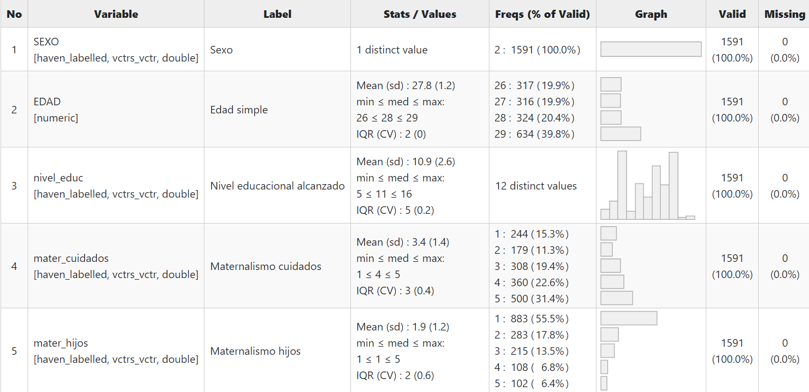
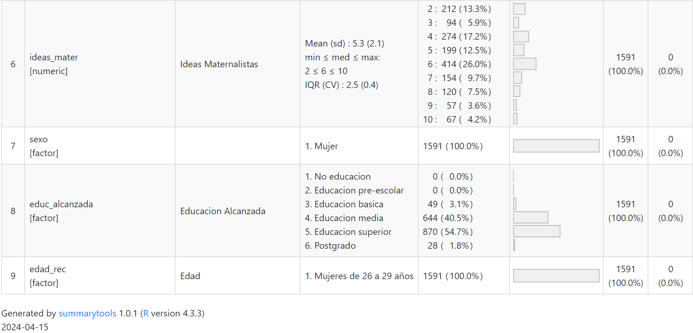
Tabla 2
En la Tabla 2 se pueden observar las frecuencias y porcentajes en torno a la variable “Ideas Maternalistas” y el “Nivel educacional alcanzado”. Es en base a esta tabla que se puede decir que, las mujeres entre 26 y 29 años que alcanzaron las educación básica y educación media en su mayoría, tienden a estar en un nivel intermedio respecto a las ideas maternalistas con las que están de acuerdo. Sin embargo, las que alcanzan la educación superior y postgrado tienen en su mayoría a estar en desacuerdo con las ideas maternalistas.
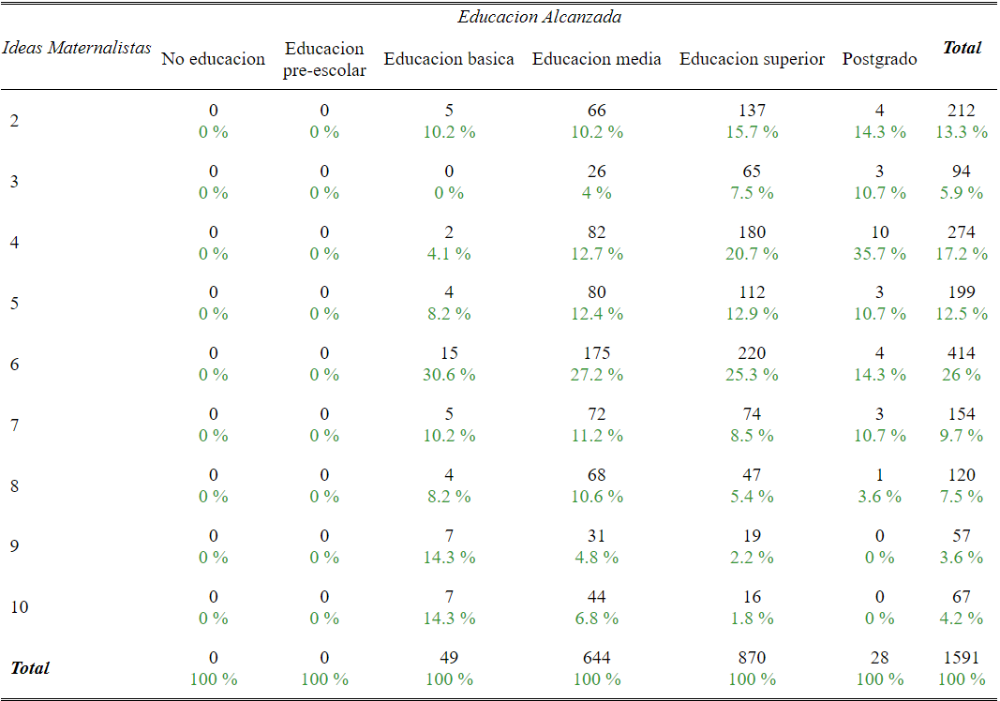
Gráficos
- Gráfico 1
En el Gráfico 1 se puede observar ideas maternalistas manifestadas en dos opciones: Maternalismo cuidados que hace referencia a la afirmación “La mujer tiene más capacidad que el hombre para desempeñar profesiones que implican el cuidado de otras personas” y Maternalismo hijos que hace referencia a la afirmación “Las mujeres que tienen hijos o hijas se sienten más realizadas que aquellas que no tienen hijos o hijas”.
Frente a la idea maternalista de cuidado las mujeres de entre 26 y 29 años de edad en un 31,4%, tienden a estar “Muy de acuerdo” con la afirmación. Mientras que con la idea maternalista de hijos, las mujeres entre 26 y 29 años de edad en un 55,5% tiende a estar muy en desacuerdo con la afirmación. Se puede decir entonces que las ideas maternalistas en torno al rol de la mujer como cuidadora pesan más en la cultura chilena que la idea maternalista de que los hijos hacen que las mujeres se sientan más realizadas.
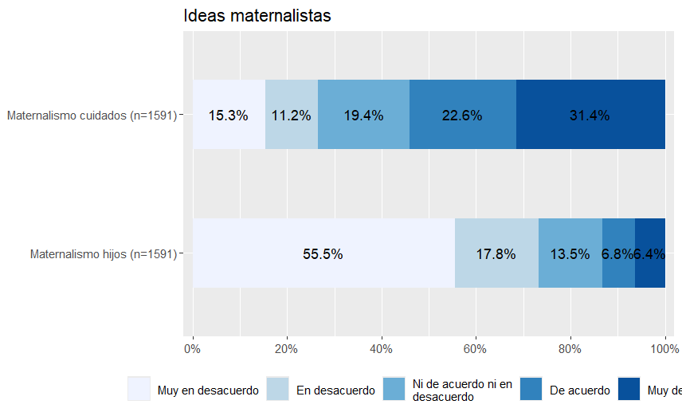
*La última categoría de respuesta es “Muy de acuerdo”
- Gráfico 2
Respecto al nivel de educación alcanzada y las ideas maternalistas de mujeres jóvenes, el Gráfico 3 señala que en promedio, las mujeres con bajos niveles de educación, tienden a estar de acuerdo con las ideas maternalistas impuestas socialmente. Sin embargo, cuando se observan las mujeres que lograron llegar a la educación superior y postgrado, en promedio ellas tienden a estar en desacuerdo con las ideas maternalistas en torno al rol de la mujer como cuidadora y de madre.
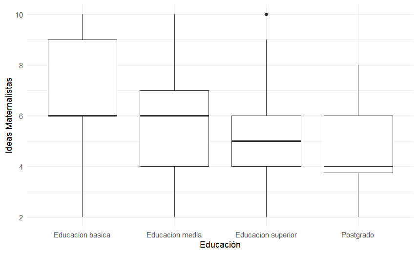
- Asociación de variables
En la siguiente imagen, se puede observar el grado se asociación entre las variables sexo, edad, nivel educacional, ideas maternalistas en torno al cuidado, ideas maternalistas en torno a los hijos e ideas maternalistas en general. El azul representa la asociación positiva y el azul la asociación negativa. Tomando en cuenta esto, podemos decir la asociación entre la variable ideas maternalistas en general y las ideas maternalistas en torno al cuidado y a los hijos es alta, pues es mayor a 0.5, pues es de 0.81 y 0.79 respectivamente. Por otro lado, la misma variable resulta tener una asociación muy baja con nivel educacional, pues es sólo de -0.25. Por último, es menester señalar que la variable edad y nivel educacional tienen una asociación moderada de 0.4, esto puede explicarse a que socialmente se espera que con mayor edad, mayor es el nivel educacional alcanzado.
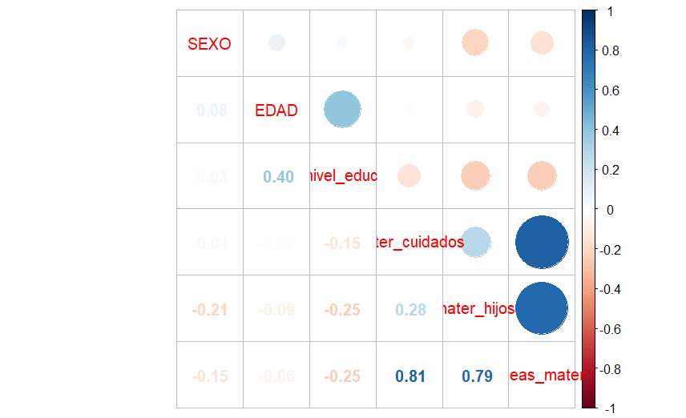
- Escala
Para esta investigación, se realizó una escala que mide los niveles de maternalismo en jóvenes de Chile. Esto se realizó considerando los altos niveles de correlación entre las tres variables que hacen alusión a ideas maternalistas en torno a cuidado, realización como mujer por los hijos e ideas maternalistas en general. Como se señala en la siguiente imagen, el Alpha de Chronbach nos señala un 0.83, lo que quiere decir que tiene una alta consistencia interna.
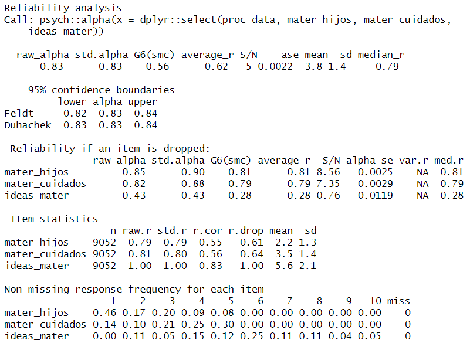
A partir de la siguiente imagen, se puede decir que en Chile, los jóvenes tienen ideas maternalistas en un nivel intermedio, ya que la mayor concentración de datos se encuentra en la categoría 12 aproximadamente, teniendo una máxima de 20.
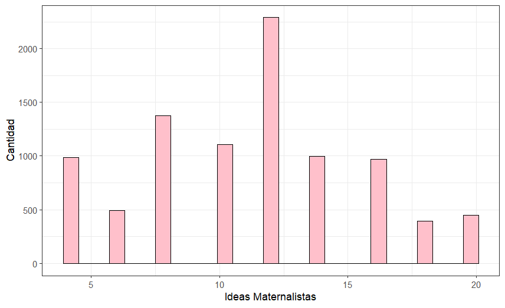
Regresión lineal
- Gráfico 3
Al observar el gráfico 3 podemos decir que las variables tienen una asociación negativa, pues se puede observar que a medida que aumenta el nivel educacional o educación alcanzada por mujeres entre 26 y 29 años, disminuyen las ideas maternalistas en general.
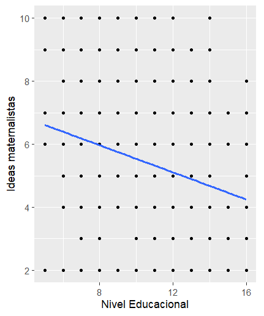
- Gráfico 4
Al igual que el gráfico anterior, las variables del gráfico 4 tienen una asociación negativa, pues a medida que aumenta el nivel educacional o educación alcanzada por mujeres entre 26 y 29 años, disminuyen considerablemente las ideas maternalistas en torno a la realización de las mujeres sólo por tener hijos.
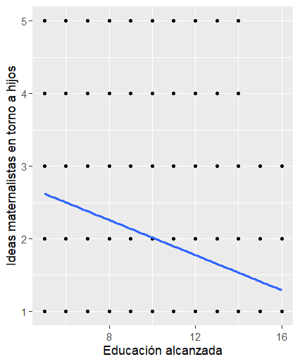
- Gráfico 5
Sin embargo, en el gráfico 5 se observa que a medida que aumenta el nivel educacional o educación alcanzada por mujeres entre 26 y 29 años, disminuyen las ideas maternalistas en torno al cuidado. Si bien, la asociación de las variables es negativa, la disminución de las ideas maternalistas en torno a los cuidados resulta no ser tan considerable como con la idea de realización de la mujer por tener hijos.
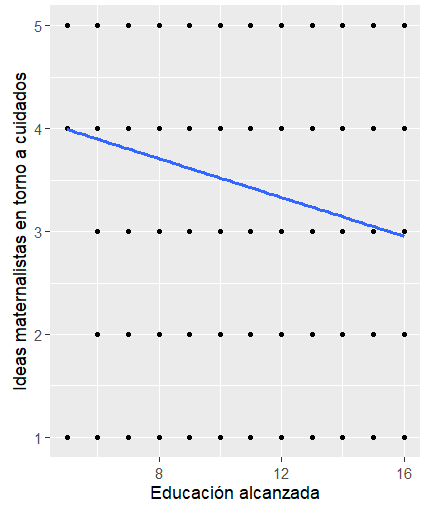
- Modelo de regresión lineal simple
En la siguiente imagen, se puede observar que en el Modelo 1 que por cada unidad en que se aumenta la educación (respecto a la educación básica) en aquellas mujeres de entre 26 y 29 años, las ideas maternalistas disminuyen en 0,86 en la Educación media con un 99% de confianza (p<0,01), disminuye en 1,76 en la Educación superior con un 99,9% de confianza (p<0,001) y disminuye en 2,23 en aquellas que alcazan un Postgrado con un 99,9% de confianza (p<0,001).
El intercepto indica que (teóricamente) una persona con edad 0 tendría un promedio de idead maternalistas en general de 6,69. Por último, podemos observar en la imagen que el Modelo 1 logra explicar un 6% de la varianza de la variable dependiente (R2=0,06).
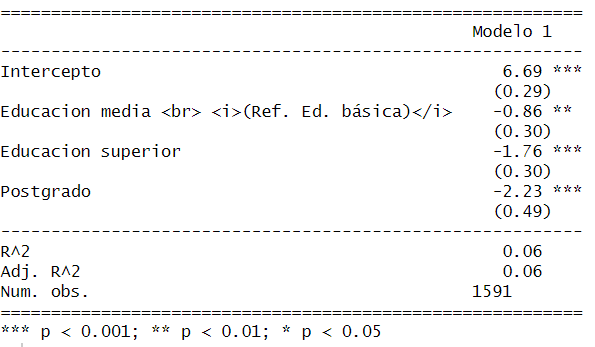
- Gráfico 6
A continuación podemos observar lo anteriormente dicho en el gráfico 6. Aquí se ve que las ideas maternalistas disminuyen respecto a la Educación básica en mujeres de entre 26 y 29 años en un 0.86 para la Educación media, un 1,76 para la Educación superior y un 2,23 para las que alcanzan un Postgrado.
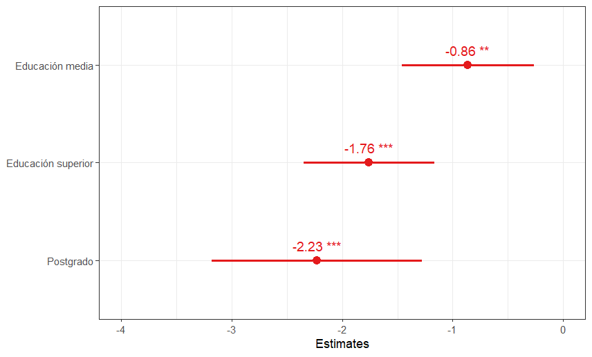
Conclusiones
En conclusión, podemos decir que la hipótesis de esta investigación se cumple, pues como queda demostrado con la regresión lineal, a medida que aumentan la educación alcanzada en mujeres de entre 26 y 29 años de edad, disminuyen las ideas maternalistas que éstas puedan llegar a tener.